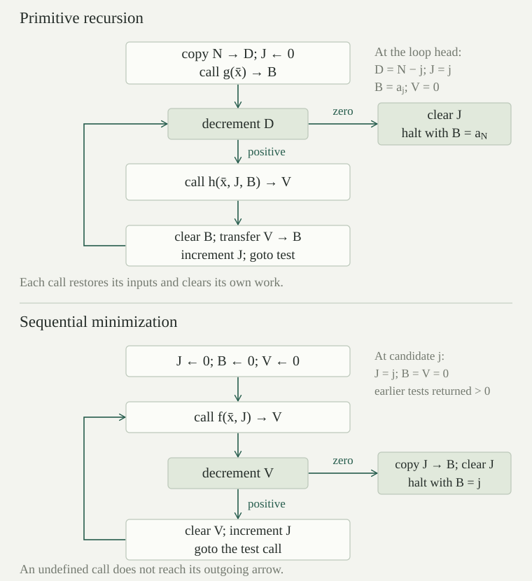

Use the actual finite counter programs with increment, consuming decrement and halt. For an arity \(n\), choose a finite register set \(\{0,\ldots,k-1\}\) with \(k\ge n+2\). Registers \(1,\ldots,n\) are the input ports, register \(0\) is the output port, and the remaining registers are the work ports. All these ports are distinct; for \(n=0\) the input list is empty. A program has a designated entry label and one designated exit label; only the exit carries halt.
For \(\bar x\in\mathbb N^n\), let \(I_{\bar x}\) put \(x_j\) in input port \(j+1\) and zero elsewhere. Let \(O_{\bar x,b}\) have the same inputs, output \(b\), and all work ports zero. A clean counter realizer of \(f:\mathbb N^n\rightharpoonup\mathbb N\) is such a finite program \(P\) satisfying, for every \(\bar x\) and every register file \(S\),
Here \(\longrightarrow_P^*\) means a finite sequence of actual counter steps, allowing zero steps. Thus every terminating run restores the inputs and clears its work, and every defined value is returned. On an undefined input the program never reaches any halt. The entire program, including its finite register and label sets, is chosen before the input tuple.
The following fragments have finite control and preserve every register they do not mention. They implement an unconditional jump without changing any final register value, clearing a register, and consuming transfer into another register.
For a jump to label \(q\), choose an owned register \(z\) and two fresh labels \(a,d\), and put \(P(a)=\operatorname{inc}(z,d)\), \(P(d)=\operatorname{dec}(z,q,q)\). From an arbitrary old value \(v\), the values are \(v,v+1,v\). The positive branch is necessarily taken, and the jump takes exactly two actual steps. It does not require \(z=0\). We write \(\operatorname{goto}(q)\) for this expanded fragment, not for an additional instruction.
To clear register \(r\), use a label \(a\) with \(P(a)=\operatorname{dec}(r,a,q)\). Starting at \(r=v\), after \(j\le v\) positive steps the label is still \(a\) and the value is \(v-j\). One zero-branch step then reaches \(q\). Thus \(\operatorname{clear}(r)\) takes \(v+1\) actual steps and ends with zero.
For distinct \(r,t\), the two rows \(P(a)=\operatorname{dec}(r,b,q)\), \(P(b)=\operatorname{inc}(t,a)\) transfer the contents of \(r\) into \(t\). Starting at \((r,t)=(v,w)\), the invariant at the \(j\)-th visit to \(a\) is \((v-j,w+j)\), for \(0\le j\le v\). The exit is reached after \(2v+1\) steps with \((0,w+v)\). Each invariant follows from the literal increment/decrement rules, so these fragments also work inside a larger register file.
For three distinct registers \(x,y,z\), with initial values \((v,0,0)\), the following fragment reaches its continuation \(q\) with values \((v,v,0)\) after exactly \(5v+2\) actual steps. All other registers are unchanged.
| Label | Instruction |
|---|---|
| \(a\) | \(\operatorname{dec}(x,b,d)\) |
| \(b\) | \(\operatorname{inc}(y,c)\) |
| \(c\) | \(\operatorname{inc}(z,a)\) |
| \(d\) | \(\operatorname{dec}(z,e,q)\) |
| \(e\) | \(\operatorname{inc}(x,d)\) |
At the \(j\)-th visit to \(a\), the values are \((v-j,j,j)\), after \(3j\) steps, for \(0\le j\le v\). A positive cycle removes one from \(x\) and adds one to each of \(y,z\). At \(j=v\), the zero branch reaches \(d\) with \((0,v,v)\). During restoration, the \(j\)-th visit to \(d\) has values \((j,v,v-j)\), for \(0\le j\le v\). Its positive cycle moves one unit back from \(z\) to \(x\). The final zero branch reaches \(q\), proving the result and the count \(3v+1+2v+1=5v+2\), including \(v=0\).
Write \(\operatorname{copy}(x,y;z)\) for this fragment under its stated zero conditions. To overwrite an arbitrary destination, first clear it and then copy. Inputs are restored at the end of a copy; their values can change during its elementary steps. Every later assertion that a subprogram preserves its inputs concerns its return, whereas an external frame is untouched at every step.
Run from \((x,y,z)=(3,2,0)\), and then from \((3,0,1)\). What returns in each case? How can an arbitrary destination be made safe without changing the source?
More generally, starting at \((v,w,t)\), the first phase has values \((v-j,w+j,t+j)\). At its exit they are \((0,w+v,t+v)\). The second phase restores all \(t+v\) units from the scratch register into the source, ending with \((t+v,w+v,0)\). Thus the two answers are \((3,5,0)\) and \((4,3,0)\). A nonzero destination adds an unwanted offset; a nonzero scratch register changes the source itself.
Clear the destination before copying, and reserve a distinct scratch register that is known to be zero. Clearing the source would lose the value to be copied. Distinctness is also essential: the invariant explicitly uses three separately updated coordinates. The compiler reserves these finitely many ports before executing the fragment.
Let \(P\) use \(k\) registers. An injection \(\rho:\{0,\ldots,k-1\}\hookrightarrow\{0,\ldots,K-1\}\) gives a renamed program by replacing every mentioned register \(r\) with \(\rho(r)\). If an ambient file \(U\) satisfies \(U(\rho(r))=R(r)\), every actual step of \(P\) from \((p,R)\) is matched by one actual step of the renamed program. The same labels are visited, the files continue to agree through \(\rho\), and every register outside the image of \(\rho\) remains unchanged. Halting and nonhalting agree.
For increment, only coordinate \(r\) changes. Injectivity ensures that the update at \(\rho(r)\) has the same value at that coordinate and leaves every \(\rho(s)\), \(s\ne r\), alone. For decrement, the selected values are equal before the step, so the same zero or positive branch is selected; in the positive case the updates correspond by the same argument. A halt row stays a halt row. Induction on the number of steps proves the run assertion, including all intermediate files and arbitrary values outside the image. A mismatched halt is impossible because the control label determines the same instruction kind.
Consequently a clean realizer can be used with any distinct ambient input ports, a separate zero output port, and enough separate zero work ports. Registers outside this image form its external frame: their values can be arbitrary and are untouched throughout the call. Its input values are restored and its work is zero on return. Finite register sets can always be enlarged to make the required injections; unused new registers start at zero in a standalone realizer.
Finitely many renamed clean realizers and the fragments above can be linked into one finite counter program. A call can return to a specified continuation without adding a call or return instruction. It returns exactly when the original realizer halts; an undefined call never reaches the continuation.
Give each program occurrence its own tagged copy of its finite label set, and rewrite every internal target using that tag. Take the disjoint union of these copies and finitely many extra fragment labels. Choose each return continuation \(q\) outside that component’s tagged label set and outside its fresh linking labels. For a loop, reserve a separate controller label outside the body; a return reaches this controller before the specified tests, updates and jump back to the body’s entry. To link an exit to \(q\), replace its halt row by the two-row goto fragment from , using one of that component’s work ports and a fresh second label. All other rows retain their instruction kind and mapped targets. Keep one separate final exit as the only halt. Every label now has one specified row, so this is a total table on a finite nonempty label set.
Before the old exit is reached, tagged control follows exactly the old program; register renaming and give its file semantics. At the exit the added two steps restore the goto register and enter \(q\). No other row jumps to that continuation from this component. Hence reaching it implies that the old exit was reached, and every old successful return reaches it. If the old program does not halt, its control never escapes to the continuation.
A loop reuses a fixed tagged body and jumps back to its entry; it does not create new labels at run time. A finite straight-line list of calls uses a finite disjoint union. All uses of “call,” “copy,” “clear” and “transfer” below stand for these literal table replacements, with fresh labels and the stated register conditions.
Every zero function, unary successor, and projection has a clean counter realizer, with the arities in the partial-recursive definition.
The zero function of arity \(n\) uses the single exit label as its entry: the output is already zero, the inputs are intact, and work is zero. For successor, copy input port \(1\) to output port \(0\), restoring port \(1\) and clearing the copy scratch, then increment the output and go to the final exit. For the projection \(\bar x\mapsto x_j\), copy input port \(j+1\) to the output and exit. The zero conditions and distinct ports are exactly those of . There are no other halts, and all these finite fragments terminate with the claimed files. The zero-argument zero function is included: it has an empty input list and returns zero without a step.
Suppose \(g_i:\mathbb N^n\rightharpoonup\mathbb N\), \(i<m\), and \(h:\mathbb N^m\rightharpoonup\mathbb N\) have clean counter realizers. Their strict composition has a clean counter realizer, including \(m=0\) and \(n=0\).
Reserve the original input ports, the final output port, distinct zero temporary ports \(Y_0,\ldots,Y_{m-1}\), and a finite zero work pool \(W\). Choose \(W\) large enough for the work ports of every component and for the copy/clear/jump fragments; a finite maximum suffices. Embed each \(g_i\) with the original inputs as its input ports, \(Y_i\) as its output, and work in \(W\). Embed \(h\) with the \(Y_i\) as its input ports, the final output as its output, and work in \(W\). Each embedding is injective. Distinct control copies are joined in the order \(g_0,\ldots,g_{m-1},h\), followed by clearing the \(Y_i\) and halting.
After the first \(j\) calls have returned, the invariant is: the original inputs are restored, \(Y_i=g_i(\bar x)\) for \(i<j\), all later \(Y_i\) and the final output are zero, and \(W\) is zero. The next call preserves earlier answers as its external frame and restores the original inputs. Its output is a fresh zero port, so the invariant advances. The same work pool can be reused because every successful call clears its own work and leaves unused pool registers unchanged.
If all inner values exist, the call to \(h\) therefore starts with exactly their tuple and clean output/work. On return it restores the \(Y_i\) and gives \(h(g_0(\bar x),\ldots,g_{m-1}(\bar x))\) in the final output. Clearing the temporary ports leaves the required final file. Conversely, a final halt can be reached only after every linked component has returned; their contracts give all the inner values and the outer value. If any required call is undefined, traps execution in that component, exactly as strict composition requires.
For \(m=0\) there are no inner calls or temporary answer ports. Call the nullary program for \(h\), treating the original inputs as external frame. It returns its nullary value when defined and otherwise never returns. For \(n=0\), the original input list is simply empty. Neither case needs a dummy numerical argument, and the same final-file criterion proves the result.
Suppose \(g:\mathbb N^n\rightharpoonup\mathbb N\) and \(h:\mathbb N^{n+2}\rightharpoonup\mathbb N\) have clean counter realizers. The partial recursion \(r(\bar x,0)\simeq g(\bar x)\), \(r(\bar x,t+1)\simeq h(\bar x,t,r(\bar x,t))\) has a clean counter realizer.
Its protected input ports contain \((\bar x,N)\). Reserve zero work ports \(D,J,V\), a copy scratch, and a pool large enough for \(g,h\). The final output port \(B\), initially zero, also holds the previous value. Copy \(N\) into countdown \(D\), preserving the input \(N\). Leave index \(J=0\), and call \(g\) with inputs \(\bar x\), output \(B\), and clean pool work. This call is made even when \(N=0\).
At a loop label, use \(\operatorname{dec}(D,\mathrm{body},\mathrm{finish})\). In the positive branch call \(h\) with input ports \((\bar x,J,B)\), fresh output \(V\), and clean pool work. On return, clear \(B\), transfer \(V\) into \(B\) so that \(V\) becomes zero, increment \(J\), and jump back to the loop. In the zero branch clear \(J\) and halt; \(D,V\) and all other work are already zero. This is one finite table by . The output/input ports of each component are disjoint, although the outer program's output \(B\) is an input of the step component.
Write \(a_0=g(\bar x)\) and \(a_{j+1}=h(\bar x,j,a_j)\) whenever the displayed finite chain exists. The loop invariant after \(j\) completed step calls is
The original input ports are restored and the pool/copy scratch are zero at these boundaries. The base follows from copying and the return of \(g\). If \(j<N\), decrement changes \(D\) to \(N-j-1\), and the call to \(h\) receives precisely \((\bar x,j,a_j)\). It preserves the countdown as external frame, restores its own input ports, and returns \(a_{j+1}\) in \(V\). Transfer and index increment establish the invariant for \(j+1\). If \(j=N\), the zero branch reaches finish, and clearing \(J\) gives the required clean final file with output \(a_N\).
If the initial call or a required step call is undefined, it cannot return, so the whole program cannot halt. Conversely, the only route to final halt passes through the initial return and exactly \(N\) successful step returns, by the countdown invariant. These returns give exactly the finite-chain criterion for partial recursion. The proof covers \(n=0\) and \(N=0\): an empty parameter tuple causes no problem, and a zero countdown skips every step call but still requires the initial value.
Use \(g()=2\), \(h(j,b)=b+2\), and recursion input \(N=3\). List \((D,J,B,V)\) at the loop boundaries. What would happen at \(N=0\) if the initial function were instead undefined?
At the first positive iteration, decrement first makes \(D=2\), but the step call still sees index \(J=0\) and previous value \(2\). It returns \(4\) in \(V\); replacing \(B\) and only then incrementing \(J\) gives the next displayed boundary. Repeating the same calculation gives output \(8\). The final zero branch reaches finish, and the clearing fragment then sets \(J\) from three to zero, leaving only the output and the original input \(N=3\) nonzero.
For \(N=0\), the call to the initial function still occurs before the countdown test. If it is undefined, execution never reaches that test and never halts. Returning the already-zero output without calling the initial program would compute a different partial function. Likewise, incrementing \(J\) before the step call would use \(h(1,a_0)\) in place of \(h(0,a_0)\); the index-independent numerical example alone would not reveal that error.
If \(f:\mathbb N^{n+1}\rightharpoonup\mathbb N\) has a clean counter realizer, then its sequential minimization \(\mu f\) has a clean counter realizer.
Keep the original inputs \(\bar x\), final output \(B=0\), candidate port \(J=0\), test-output port \(V=0\), and fresh zero work/copy scratch. At the loop entry call the realizer of \(f\) with inputs \((\bar x,J)\) and output \(V\). Link its return to \(\operatorname{dec}(V,\mathrm{positive},\mathrm{zero})\). The positive branch has already removed one unit from the test value; clear the remainder of \(V\), increment \(J\), and jump back to the test entry. The zero branch leaves \(V=0\); copy \(J\) into \(B\), clear \(J\), and halt. Each call starts with its output and work zero, and each fragment has the proved elementary implementation.
The loop invariant at candidate \(j\) says that \(J=j\), the original inputs are restored, \(B,V\) and work are zero, and every earlier test \(f(\bar x,i)\), \(i<j\), has returned a positive value. It holds initially with no earlier candidates. A positive return restores the call's inputs and work, and clearing, increment and goto advance the invariant. A zero return gives final output \(j\), restores the original inputs, and clears every work port. These are exactly the two parts of the defining condition for \((\mu f)(\bar x)\downarrow=j\).
If that condition holds for \(j\), induction runs the first \(j\) positive tests and then the zero test, each in finite time, so the constructed program returns \(j\). Conversely, reaching final halt requires a zero branch after finitely many positive returns, and the invariant supplies all the earlier defined tests. An undefined test never returns to its branch instruction, by . If every test returns positively, the program instead completes infinitely many positive cycles, none containing halt. Thus neither kind of divergence creates a false output. In particular, the undefined test at zero followed by a later zero still blocks this compiler at its first call.

For every finite arity \(n\) and every partial recursive function \(f:\mathbb N^n\rightharpoonup\mathbb N\), there is one clean counter realizer of \(f\). Its finite register set, finite total instruction table and entry/exit labels depend on the recursive construction, and work for every input tuple with exactly the defined outputs and divergence of \(f\).
Induct on a finite construction of \(f\) from the closure rules. proves the zero, successor and projection cases. combines the finitely many induction hypotheses for strict composition. and give the recursion and minimization steps, with their exact domain conditions. At each step take a sufficiently large finite register set, choose the stated disjoint register embeddings, and link finitely many finite tables. These choices depend on the component programs and their arities, never on their eventual numerical inputs.
The induction proves the full clean-return contract, rather than only equality of answers on runs that happen to halt. Therefore it also proves that a compiled program cannot halt on an undefined input. Every construction step is a finite manipulation of labelled instruction tables; there is no atomic copy, clear, call or unbounded instruction hidden in the result. This establishes the claim for arbitrary finite arity, before any tape input convention is chosen.
Construct clean counter realizers for the nullary constant \(c\) and the nowhere-defined nullary partial function. In a composition with no inner functions, why must the nullary outer program still be run?
Use registers \(0,1\), output \(0\) and work \(1\), both initially zero. For the constant \(c\), use \(c\) successive increment rows on register \(0\), followed by the unique halt. It returns \(c\) with work zero; for \(c=0\) the entry is already halt. For the undefined function, use an entry \(a\) with \(P(a)=\operatorname{inc}(1,a)\) and a separate unreachable halt label. Its stopped run has work value \(j\) and label \(a\) after \(j\) actual steps, so it never returns. Cleanliness is required on return; it does not assert bounded or clean work during a divergent run.
The empty tuple is a genuine input, and these programs give its two possible kinds of behavior. When \(m=0\) in strict composition, there are no inner values to compute, but the outer nullary computation can still be undefined. Omitting that call would incorrectly make the composite total. With parameters \(\bar x\), the same nullary call treats all those input ports as external frame, so the composite is defined on every \(\bar x\) if the nullary value exists and on none otherwise.
For every unary partial recursive function \(f:\mathbb N\rightharpoonup\mathbb N\), there is one actual finite-alphabet, finite-state native Turing machine \(T_f\) such that, for every \(n,m\),
The input is exactly \(n\) native marks with head zero. When it halts, the final head is zero and the tape consists exactly of \(f(n)\) native marks starting there, with all auxiliary information erased. If \(f(n)\) is undefined, \(T_f\) never halts.
Apply at arity one. Its program \(P\) has input port \(1\), output port \(0\), and at least three registers, so its clean input file is exactly the counter input file \(R_{1,n}\). The return contract says \(G_{P,1,0}(n)\simeq f(n)\) on every input. Now apply the actual counter-to-tape compiler to this fixed \(P\), with \(i=1\), \(o=0\), and call the result \(T_f\). Its output equality proves the display, including undefined inputs. Its cleanup theorem supplies the stronger final-tape and head assertion, even when input or output is zero.
The finite program is chosen before all \(n\), and its tape machine is then fixed before all \(n\). The finite-arity counter theorem does not by itself specify a multiargument tape format. The conclusion here is unary; a tape theorem for literal tuples would additionally require an explicit tuple encoding and preprocessing construction.
A unary partial function \(f:\mathbb N\rightharpoonup\mathbb N\) is partial recursive if and only if it is computed by a native Turing machine with the specified unary input and readout. Equality includes both the defined values and the inputs on which no value exists.
The forward direction is . For the reverse direction, the coding of actual tape computations proves that every such machine function is partial recursive, using its primitive-recursive numerical transition and successful finite histories. The two directions concern the same native model and the same \(n\)-mark convention, so together they prove the stated equivalence.
In particular, an everywhere-halting native machine computes a total recursive function; every total recursive unary function has such a machine by the forward direction. This is an equivalence between precise mathematical definitions. The Church–Turing thesis additionally identifies these classes with the informally described effectively executable procedures; the two compilers alone do not prove that identification, or a comparison of running times.